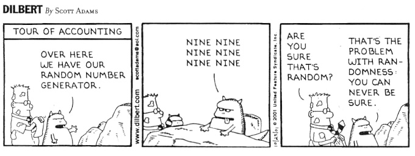

Here’s a nice little mind blower: it’s actually incredibly hard to find and measure something that is truly random. This is actually a bit of a problem as there’s so many places where random numbers are needed, in this blog post I’ll use a few running examples where random number generation is needed:
- The gambling sector, pretty much everywhere from shuffling cards in online poker (and in casinos for the particularly high tech ones) to slot machines for obvious reasons.
- Simulation, when it’s not deterministic you need random numbers. Similarly, video games can be seen as big simulations and generally require random numbers.
- Random assignment, making sure that everything is fair when say assigning placebos in a clinical trial.
##Motivation It seems like it shouldn’t be a problem, like everything seems random so it shouldn’t be too hard to just get a random number. This is true, there’re loads of approaches which you can take to obtain random numbers such as:
- Measuring radioactivity, place a radioactive isotope in front of a device called a Geiger counter, observing the time between clicks is random. PRO: The numbers are truly random CONS: Health issues of sitting near a radioactive isotope every time you need a random number.
- Observing human behaviour, people are random, if you observe things like extremely small movements of a mouse or time between keystrokes to the microsecond can be used. PRO: Can get massive amounts of random numbers if you have a database of people willing to supply their keystrokes. CON: Good luck getting even one person to agree to giving you open access to their computer, you’ll need thousands to get the amount of random numbers most applications need.
Both of these methods are highly limited in speed and require a lot of legwork to get up and running.
Pseudorandom numbers
So, how do we actually get these random numbers quickly? You’ll notice that nearly every programming language has a command to generate random numbers for example runif in R, this all done with a method called pseudorandom number generation, it generates sequences of numbers which look random but in fact they’re not. These numbers are completely determined by a mathematical formula which is designed to produce sequences of random looking numbers.
Fact is that for applications like simulation and video games we really don’t care as long as they look random which makes. Take applications like security and gambling, if these numbers are in any way predictable then there’s a massive problem with random number generation. Take an online slot machine, if someone figured out the underlying random number generator then they could just bet small when they know they’re not going to win; then, when a winning spin is coming up they just put a big bet on. Therefore, if gambling companies go for pseudorandom numbers they should really ensure that it’s virtually impossible to reverse engineer.
Example generator – Linear congruential generator
Here I’ll give an example of one of the earliest pseudorandom number generator. It’s defined as follows $$Xn=(aX{n-1}+c)mod m$$
so you have to specify * a the multiplier * m the modulus * c the increment * $X_0$ a value to start the algorithm
In this generator, the next value is completely determined by the value that came before it. I find this quite mind blowing as it’s one of the most commonly used random number generators. It creates sequences that look very random. Aditionally you can use some fancy mathematical proofs that gaurentee that no two random numbers will be repeated within a sequence of $m$ numbers. So if you set m to be massive like $2^{32}$ this can make very long sequences of unique numbers.
Generators like this are good for Random assignment and simulation as they give us billions of numbers which statistically indistiguisibly for truely random numbers (if we choose the right formula and numbers). I’ll now show you one problem with such a generator.
Cryptographically secure pseudorandom number generator
Cryptographically secure basicly means you can give someone as many numbers as they like and they’ll never be able to reverse engineer the generator. This is exactly what is needed for applications to gambling and security. The linear congruential generator above does not satisfy this property take the numbers:
5, 1, 3, 2, 6, 4, 5, 1
You can easily find that a linear congruential generator with the values c=0, a=3, m=7 generates this. Sadly even when you pick larger numbers the same is true the formula can be reverse engineered; Therefore, more advanced formula are required. Algorithms that have this secure property are significantly harder to find.
##Conclusion
